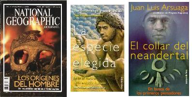

La revista National Geographic tiene unos interesantes artículos de divulgación científica relacionados con la evolución humana. La mayoría de estos se encuentran en la edición especial de verano de 2002. Los artículos son:
El horizonte más lejano. Por Meave Leackey. Septiembre de 1995.
Cara a cara con la familia de Lucy. Por Donald C. Johanson. Marzo de 1996.
Los primeros pasos. Por Rick Gore. Febrero de 1997.
Footprints in the ashes of time (Huellas en las cenizas del tiempo) Por Mary D. Leakey. Abril de 1979.
Nuevos hallazgos en Sudáfrica. Por André W. Keyser. Mayo de 2000.
Primeros pasos. Por Rick Gore. Febrero de 1997.
Mundos en expansión. Por Rick Gore. Mayo de 1997.
Los primeros europeos. Por Rick Gore. Julio de 1997.
¿El precursor? Nuevo hallazgo. Por Rick Gore. Agosto de 2002. Este artículo trata de un hallazgo de 750 mil años que podría ser el primer homínido que abandonó África.
Neandertales. Por Rick Gore. Enero de 1996.
Los primeros de nuestra especie. Por Rick Gore. Septiembre de 1997.
Gente como uno. Por Rick Gore. Julio de 2000.
La cueva de Chauvet. Por Jean Clottes. Agosto de 2001.
En busca de los primeros americanos. Por Michael Parfit. Diciembre de 2000.

A nivel un poco más técnico se encuentra la revista Investigación y ciencia. Algunos artículos interesantes son:
El más antiguo de los homínidos. La aparición de nuevos fósiles nos acerca al umbral del origen del linaje humano. Por Kate Wong. Marzo de 2003.
«Antiguos fósiles de homínidos de África. Una especie de Australopithecus, el antepasado de Homo, hace remontar los orígenes de la bipedia a hace unos cuatro millones de años» por Meave Leackey y Alan Walker. Agosto de 1997.
«Incidencia de la dieta en la hominización. Los cambios operados el régimen alimentario han constituido una fuerza motriz de la evolución humana» Por William R. Leonard. Febrero de 2003.
Homínidos contemporáneos: Damos por supuesto que Homo sapiens es el único homínido sobre la Tierra. Pero eso es hoy. Por Ian Tattersal. Marzo de 2000.
De África ¿una… y otra vez?: África es el lugar del nacimiento de la humanidad. Pero, ¿Cuántas especies humanas evolucionaron allí? ¿Cuántas emigraron? Por Ian Tattersal. Junio de 1997.
Corredor de homínidos en África sudoriental: Entre dos importantes yacimientos muy distantes entre si se abre una ventana que permite reconocer la ruta seguida por los homínidos africanos y arroja luz sobre su movilidad. Por Friedemann Schrenk y Timothy G. Bromage. Diciembre de 2000.
Los neandertales. Estos homínidos se cruzaron con humanos de anatomía moderna y adquirieron en algunos casos una conducta avanzada. Pero las pruebas que avalan esta tesis son objeto de controversia. Por Kate Wong. Junio de 2000.
Origen africano reciente de los humanos. La genética nos revela que una mujer africana, de hace 200.000 años, fue nuestro antepasado común. Por Allan C. Wilson y Rebecca L. Cann.
Evolución multirregional de los humanos. El registro fósil y la genética proclaman que los grupos humanos surgieron donde se encuentran hoy. Por Alan G. Thorne y Milford H. Wolpoff.
Para una comprensión general y actualizada de la evolución se recomienda el libro: «La especie elegida: La larga marcha de la evolución humana. Por Juan Luis Arsuaga e Ignacio Martínez. Undécima edición. Ediciones Temas de Hoy. S.A. 1998.»
Un buen libro sobre los yacimientos españoles de Atapuerca es: «Atapuerca, un millón de años de historia» (1998) J. Cervera, J.L. Arsuaga, J.M. Bermúdez de Castro y E. Carbonell. Plot Ediciones y Editorial Complutense, Madrid.
Otro libro de Juan Luis Arsuaga es «El collar del neandertal, en busca de los primeros pensadores». (1999). Este libro es excelente para aprender sobre esa otra humanidad que evolucionó en Europa durante el Pleistoceno. Colección: Tanto por Saber. Ediciones Temas de Hoy, Madrid. 311 pp.
Volver a la sección Ciencias de los orígenes
Comentarios
Comments powered by Disqus